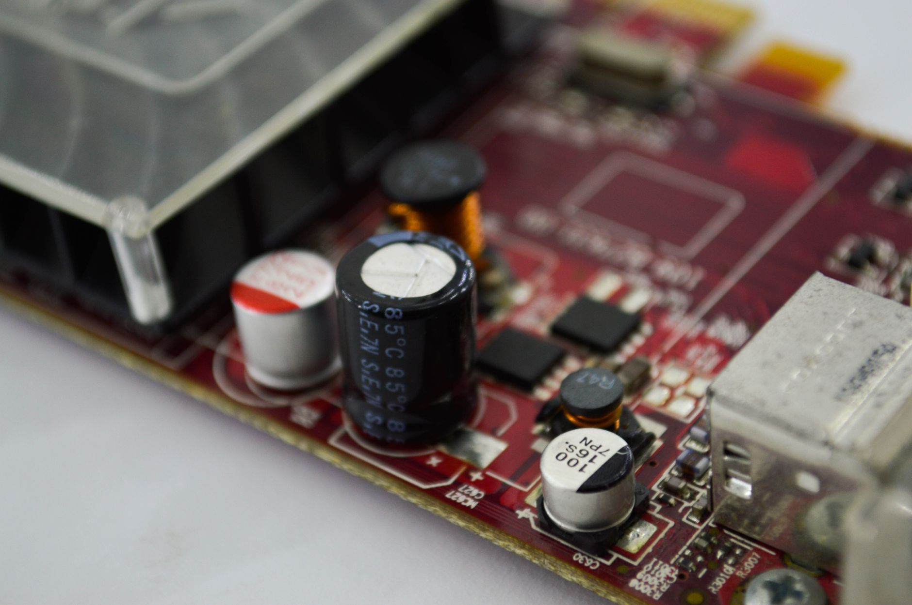

탄탈럼 납기 26주 고착, AI 서버 증설 병목 현실화

탄탈럼 커패시터 글로벌 시장은 Vishay Intertechnology, KEMET(Yageo 자회사), AVX(교세라 자회사), 삼성전기 4개사가 점유율 약 75%를 차지한다. 2025년 하반기부터 AI 서버용 전원 회로에 탄탈럼 폴리머 커패시터 채택이 급증하면서 주요 유통사 재고가 역대 최저 수준으로 떨어졌고, 2026년 1분기 기준 납기가 24~28주로 집계됐다.
탄탈럼 원석(콜탄) 생산의 약 50%는 콩고민주공화국(DRC)에서 이루어지며, 르완다·브라질이 각각 약 15%, 11%를 담당한다. DRC 동부 지역의 정정 불안과 르완다 수출 규제 강화가 2025년 이후 원재료 공급 불확실성을 높였다. 정제 탄탈럼 분말 생산은 독일 H.C. Starck(현 AMG Advanced Metallurgy)과 미국 Global Advanced Metals 2개사가 글로벌 공급량의 60% 이상을 담당한다.
삼성전자 DS부문과 SK하이닉스의 HBM 제조 공정에도 탄탈럼 커패시터가 전원 안정화 부품으로 사용된다. 납기 26주는 분기 단위 생산 계획에 소재 조달이 선행되어야 한다는 의미이며, AI 서버 ODM 기업들의 BOM 재설계 압력이 커지고 있다.
국내 AI 데이터센터 투자 계획(정부 1600조 원 메가프로젝트)에서 서버 증설 일정이 탄탈럼 커패시터 조달 일정에 묶이는 사례가 실제 조달 현장에서 나타나기 시작했다. 대안 부품인 MLCC(세라믹 커패시터)는 일부 용도를 대체할 수 있으나 고온·고전압 특성에서 탄탈럼을 완전히 대체하지 못한다.
탄탈럼 이슈는 갈륨·게르마늄처럼 지정학적 수출통제가 아닌 '수요 폭증+원산지 집중'의 복합 병목이다. 이는 중국 통제를 피해도 AI 인프라 확장 속도 자체가 특정 소재의 물리적 공급 한계에 부딪히는 구조적 문제임을 보여준다.
AI 서버 1랙당 탄탈럼 커패시터 소요량은 약 300~500개 수준으로 추정된다. 글로벌 AI 인프라 투자가 2026~2027년 연간 3000억 달러를 상회하는 상황에서 탄탈럼 공급 능력 확장은 광산 개발 사이클(5~7년)을 감안하면 단기 해소가 불가능하다.
Vishay Intertechnology와 KEMET(Yageo)는 장기 공급계약 프리미엄을 수취하며 마진을 개선 중이다. 2026년 1분기 Vishay의 탄탈럼 부문 영업이익률은 전년 동기 대비 4~6%p 상승한 것으로 추정된다.
삼성전기는 MLCC 포트폴리오를 통해 탄탈럼 대체 수요를 일부 흡수하는 포지션을 취하고 있다. 탄탈럼 수급 불안이 지속될수록 MLCC 고용량 제품 수주가 늘어나는 구조적 수혜를 받는다.
국내 AI 데이터센터 구축 수주를 받은 IT 인프라 기업들(삼성SDS, LG CNS, SK C&C 등)은 서버 납기 지연을 고객사에 설명해야 하는 상황에 처했다. 계약 지체 조항이 있는 공공·금융권 발주 프로젝트에서 실질적 패널티 리스크가 발생할 수 있다.
AI 서버 ODM 기업인 대만 Quanta·Wistron·Inventec는 탄탈럼 조달 우선순위에서 엔비디아·AMD 직접 공급 라인에 밀리는 구조가 심화되고 있다. 한국 AI 서버 완성품 수입 비용이 BOM 상승분(약 3~5% 추정)만큼 전가되는 경로도 존재한다.
AI 서버 구매 계획이 있는 기업은 현 시점에서 최소 9~12개월 앞선 조달 발주를 집행해야 한다. 2027년 1분기 이후 서버 증설을 계획하고 있다면 2026년 4분기 내 커패시터 포함 BOM 전체의 선행 발주가 필수다.
탄탈럼 재활용 분야에 주목할 필요가 있다. 스크랩 탄탈럼 회수율은 현재 약 20~25%에 불과하며, 회수 공정 기술을 보유한 AMG Advanced Metallurgy·Ningxia Orient Tantalum(중국)이 중장기 공급 확대의 핵심 플레이어가 될 것이다.
실제 조달 현장에서는 — 납기 26주 안내를 받은 바이어들이 복수 유통사에 동시 발주를 넣어 실수요보다 30~50% 부풀려진 주문이 시스템에 쌓이는 '팬텀 오더' 현상이 나타나고 있다. 이 거품이 꺼지는 시점에 납기가 일시적으로 단축되는 구간이 생기는데, 그 타이밍을 포착해 장기 계약 전환을 협상하는 것이 현재 조달 담당자의 실전 전략이다.
이 포스팅은 쿠팡 파트너스 활동의 일환으로 수수료를 제공받습니다.